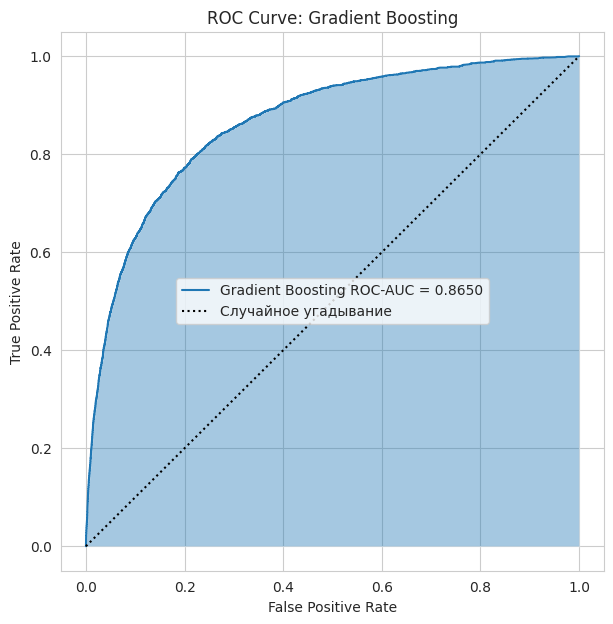

Лабораторная работа 4: Классификация с применением Scikit-Learn
Цели
- Изучить применение библиотеки Scikit-Learn для решения задачи классификации.
- Освоить базовые этапы построения модели машинного обучения: предобработку данных, обучение и оценку качества классификатора.
- Исследовать различные алгоритмы классификации на задаче предсказания кредитного дефолта.
Задачи
В рамках лабораторной работы требовалось:
- Загрузить и предобработать обучающие и тестовые данные
- Обучить модели классификации с помощью Scikit-Learn
- Оценить качество моделей с использованием
accuracy,confusion matrixиROC-AUC - Исследовать влияние порога классификации на результаты модели
- Построить ROC-кривые классификаторов
- Исследовать дополнительные алгоритмы классификации и сравнить их качество
- Проанализировать современные методы кредитного скоринга
- Рассмотреть способы интеграции ML-модели в веб-приложение
Ход работы
1. Загрузка и анализ данных
В качестве исходных данных использовался датасет Kaggle Give Me Some Credit, посвящённый задаче предсказания кредитного дефолта.
Для загрузки обучающей и тестовой выборок использовалась библиотека pandas:
training_data = pd.read_csv('training_data.csv')
test_data = pd.read_csv('test_data.csv')
После загрузки была выполнена проверка структуры данных с помощью метода info().
В ходе анализа были обнаружены пропущенные значения в признаках MonthlyIncome и NumberOfDependents, а также выявлен дисбаланс классов целевой переменной.
2. Предобработка данных
Для обработки пропусков были вычислены средние значения признаков обучающей выборки:
train_mean = training_data.mean()
После этого пропущенные значения были заполнены с помощью метода fillna():
training_data.fillna(train_mean, inplace=True)
test_data.fillna(train_mean, inplace=True)
Далее данные были разделены на входные признаки и целевую переменную:
training_values = training_data[target_variable_name]
training_points = training_data.drop(columns=[target_variable_name])
3. Обучение моделей классификации
В качестве базовых моделей были выбраны:
Logistic RegressionRandom Forest Classifier
Модели были созданы и обучены с помощью библиотеки Scikit-Learn:
logistic_regression_model = linear_model.LogisticRegression()
random_forest_model = ensemble.RandomForestClassifier(
n_estimators=100
)
logistic_regression_model.fit(training_points, training_values)
random_forest_model.fit(training_points, training_values)
Логистическая регрессия использовалась как базовая модель классификации, а Random Forest - как ансамблевый алгоритм для поиска более сложных зависимостей между признаками.
4. Оценка качества моделей
Для оценки качества классификации были получены предсказания моделей на тестовой выборке:
test_predictions_logistic_regression = logistic_regression_model.predict(test_points)
test_predictions_random_forest = random_forest_model.predict(test_points)
Для анализа качества использовались метрики:
accuracyconfusion matrixROC-AUC
Дополнительно была построена confusion matrix, позволяющая оценить количество верных и ошибочных предсказаний каждого класса.
5. Анализ порога классификации и ROC-AUC
Помимо предсказания классов, модели могут выдавать вероятность принадлежности объекта к классу дефолта. Для этого использовался метод predict_proba():
test_probabilities = logistic_regression_model.predict_proba(test_points)
test_probabilities = test_probabilities[:, 1]
Было исследовано влияние порога классификации на результат модели. При понижении порога модель чаще предсказывает дефолт, а при повышении — реже относит клиентов к проблемным.
Также была рассчитана метрика ROC-AUC:
roc_auc_value = roc_auc_score(test_values, test_probabilities)
ROC-AUC использовалась как более информативная метрика для задачи с дисбалансом классов.
6. Исследование дополнительных моделей
В рамках самостоятельной работы были исследованы дополнительные алгоритмы классификации:
- k-Nearest Neighbors (
kNN) - Support Vector Machine (
SVM) Gradient BoostingHistGradientBoostingClassifier
Для моделей kNN и SVM применялась стандартизация признаков с помощью StandardScaler, поскольку данные алгоритмы чувствительны к масштабу входных данных.
Пример создания модели kNN:
knn_model = make_pipeline(
StandardScaler(),
KNeighborsClassifier(n_neighbors=15)
)
Качество моделей сравнивалось с помощью метрики ROC-AUC.
Пояснение
Почему использовалась ROC-AUC: в задаче кредитного скоринга наблюдается выраженный дисбаланс классов - клиентов без дефолта значительно больше, чем клиентов с просрочкой. По этой причине accuracy не всегда объективно отражает качество модели. Метрика ROC-AUC позволяет более корректно оценивать способность модели различать классы при изменении порога классификации.
Итоговые результаты сравнения моделей:
| Модель | ROC-AUC |
|---|---|
| Gradient Boosting | 0.864968 |
| HistGradientBoosting | 0.863617 |
| Random Forest | 0.840026 |
| kNN | 0.718918 |
| Logistic Regression | 0.661806 |
| SVM | 0.660802 |
Наилучшее качество показали ансамблевые методы бустинга — Gradient Boosting и HistGradientBoostingClassifier. Они значительно превзошли Logistic Regression, SVM и kNN по метрике ROC-AUC.
Ниже представлен график ROC-кривой для модели с наилучшим значением ROC-AUC:

В ходе исследования было установлено, что ансамблевые методы бустинга наиболее эффективно работают с табличными данными кредитного скоринга.
kNN показал средний результат, а Logistic Regression и SVM продемонстрировали более низкое качество классификации на рассматриваемом наборе данных.
Выводы
В ходе выполнения лабораторной работы были изучены методы классификации в библиотеке Scikit-Learn и рассмотрена задача предсказания кредитного дефолта.
Были реализованы основные этапы работы с ML-моделью:
- предобработка данных
- обучение классификаторов
- оценка качества моделей
- анализ ROC-кривых и
confusion matrix
На практике было показано, что accuracy не всегда является достаточной метрикой при дисбалансе классов, поэтому для оценки качества дополнительно использовались ROC-AUC и confusion matrix.
Также были исследованы дополнительные модели классификации. Наилучшие результаты показали ансамблевые методы бустинга, которые оказались наиболее эффективными для табличных данных кредитного скоринга.
Ссылка на доску Colab: